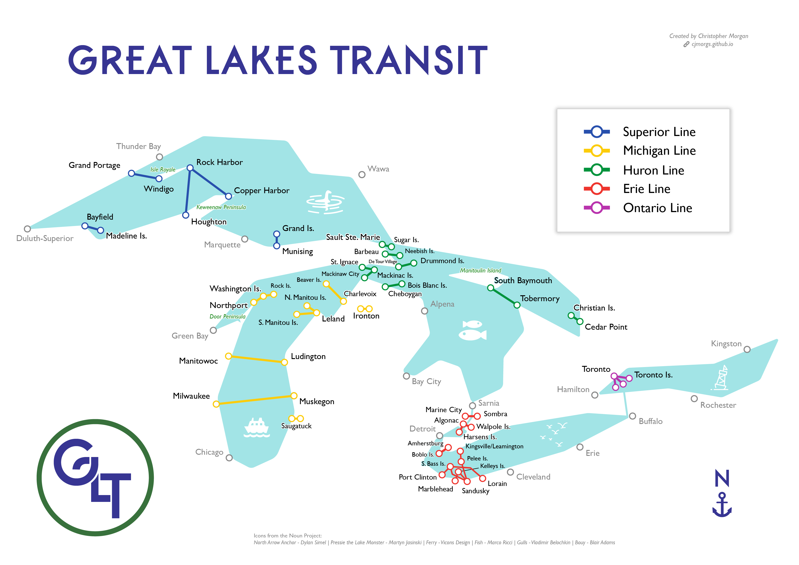

I've always been fascinated by water as a means of transport, but it's not all that prevalent in this day and age for a number of reasons. Imagining it as a transit system was an amusing hypothetical, and the simplicity and colors of the transit-style are pretty fun to work with. I welcome any comments on ferry routes that I missed - it was a fair bit of research trying to compile all of these!
Bonus Lake! I lived in Burlington, Vermont for a summer and have visited several times as well. I'm enamored with this lake for its proximity to the Adirondacks and Green Mountains...highly recommend a ferry ride here.